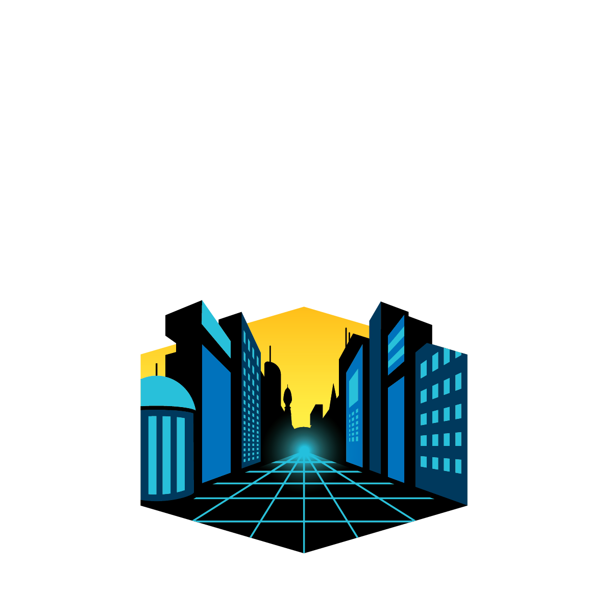

2021
FIRST
Robotics Competition

CONGRATULATIONS!
NAME_SURNAME
from team
#TEAM_NUMBER
participated at the 2021
FIRST Robotics Competition.
Ayşe Selçok
Representative - Fikret Yüksel Foundation
Alex Francis Burchard
Director - Fikret Yüksel Foundation
×
FRC Sertifika sistemimize hoşgeldiniz!
Bu ekranı kapattıktan sonra;
Çıktı alabilmek için
CTRL + P
tuşlarına basınız.
Kaliteli bir çıktı için;
Kağıt boyutunu A4 seçiniz ve ayarlardan arka plan grafiklerini işaretleyiniz.
Sistemimizi kullandığınız için teşekkür ederiz.
Fikret Yüksel Vakfı IT Komitesi